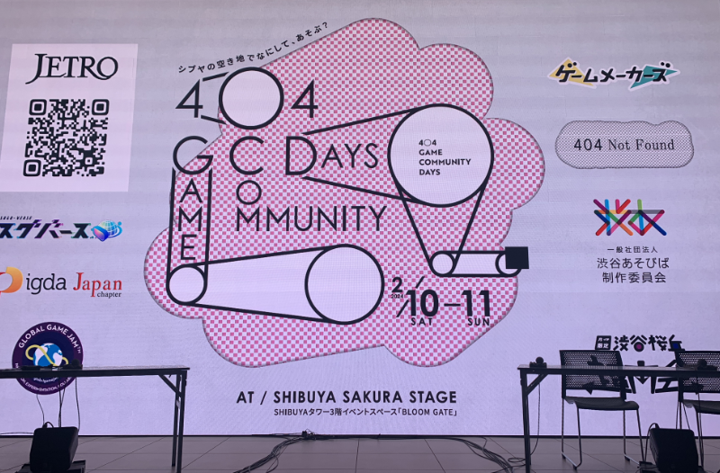
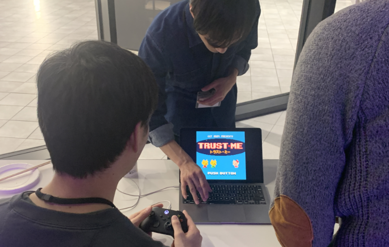
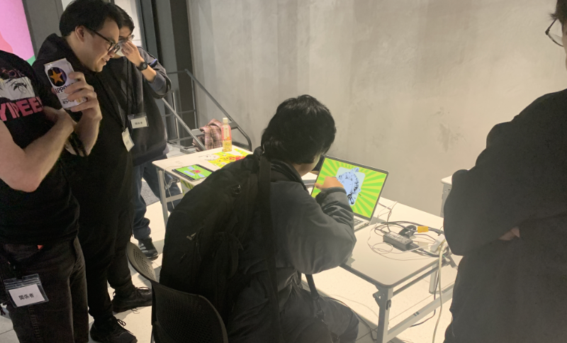
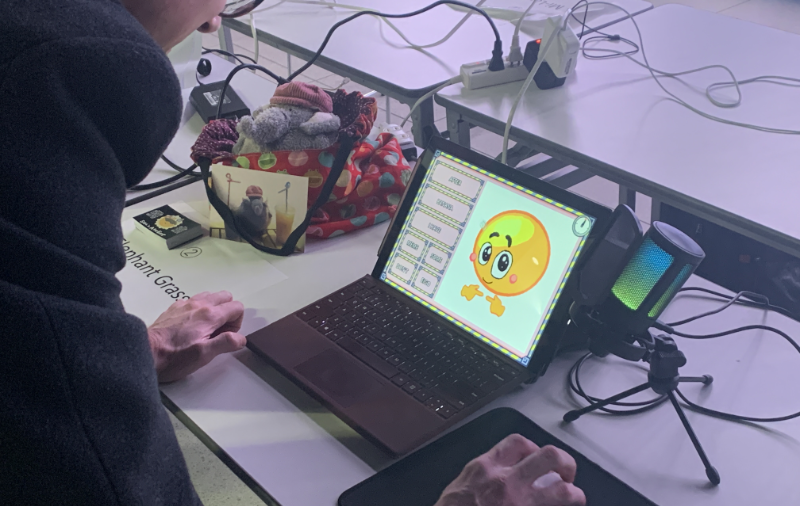

|

After Global Game Jam, we went to an afterparty that was part of 404 Community Days. 404: not found is an ambitious community project that promises to create a space close to Shibuya station for indie creators.
Several teams from our site, Let's Games! Tokyo came to the event. We met folks from IGDA Japan, who is heavily promoting Global Game Jam in Japan.
As a GGJ organizer in Japan for five years, it's a strange feeling to meet folks in person that I only knew through Slack. I was happy, of course; but because I'm a minority non-Japanese person in a majority Japanese space, it was hard not to feel like an outsider.
The same can be said for a Japanese person in a majority non-Japanese space. Let's Games! Tokyo has always been a bilingual site, but we have experienced first-hand the chilling effect Japanese participants have when walking into a room of non-Japanese people. This is why I vowed Let's Games! Tokyo never be mentioned as a "foreigner" site, because that further drives a wedge between native Japanese speakers and non-native speakers and runs counter to our goal of bringing these communities closer.

Mikami-sensei, who is an organizer for Tokyo University of Technology, talked about this year's jam and how they had, over the past fifteen years, grown and shrunk, and grown again. At the site's peak in 2014, it had over 195 participants!
Yoshida-sensei talked about his experience doing game jams in Belgium and Korea, where Japanese-speakers went abroad to jam with folks from many different nationalities.
I didn't have to worry about being an outsider for too long, because I spoke with Ono-san from IGDA Japan and he welcomed me soon after the presentation. Our jammers from Let's Games! started chatting with other jammers from the Akihabara site.
In particular, Fukuwarai Panic! and Baby Rampage really made me laugh out loud.

Thank you to the team of Paper Slacking and the 漫才 team for letting me play your games!
"The purpose of a game jam is for people to come together in a noncompetitive space and play and learn."
Mikami-sensei's words from his talk resonated with me. The world truly is a small village, and you'd be surprised who has connections with who. This person from the Akihabara site knew this person, -sensei knew this person's advisor—and we were all meeting for the first time.
What a great feeling to be part of this global community!

Thank you for 404 Community Days and IGDA Japan for having us. We really had fun, and this year, I felt far more connected to my fellow organizers than I had since I started running the site.
There are still far fewer sites in Japan than you'd expect; but my hope is that we continue to grow and build our global village, brick by brick!
For everyone interested, IGDA Japan made a list of all GGJ sites in Japan here.
And for anyone from other sites who want to know how Let's Games! Tokyo went this year, I wrote up an after-report for the event.
Looking forward to how the 404 not found space develops!